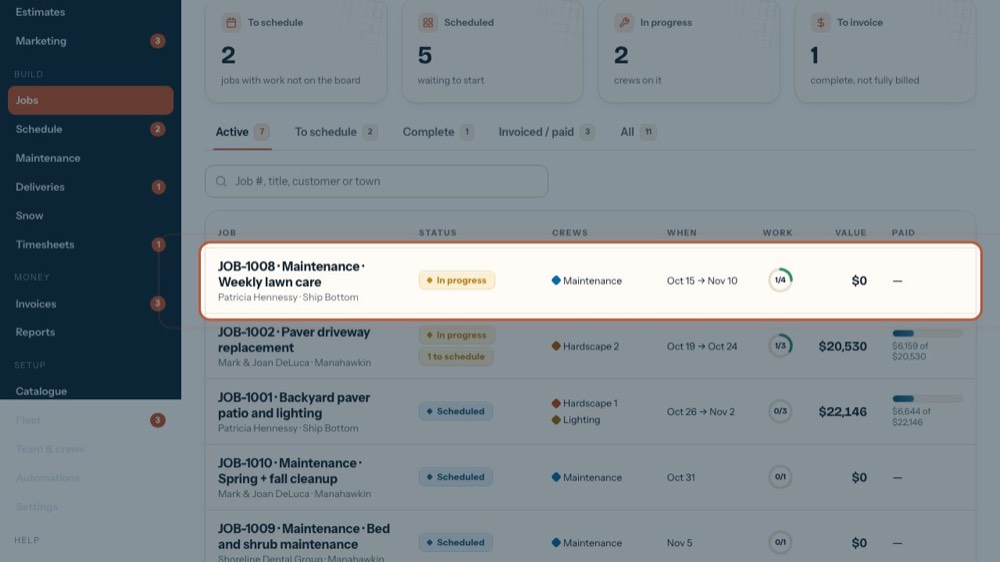
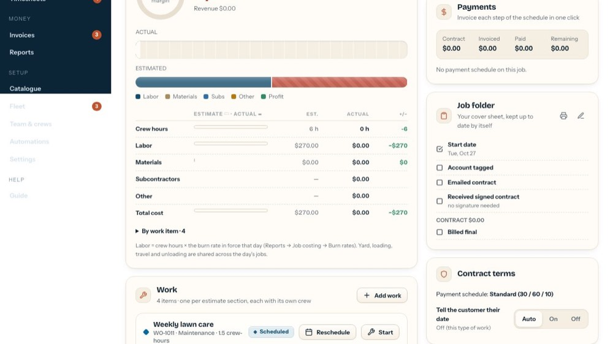

Permits: no start before the township approves
In the office app, press Help and type permits
: the tour plays on your own screen, with your own data.
-

1Open a job
Permits are kept on the job.
-

2The job folder
Tick "Needs a township permit" and fill in the township and dates. The crew can't start until you press "Mark the permit approved"; the job shows a lock on the schedule meanwhile.